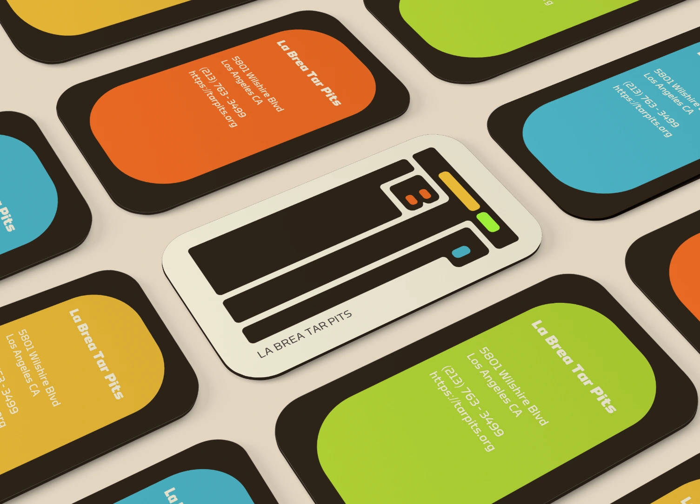
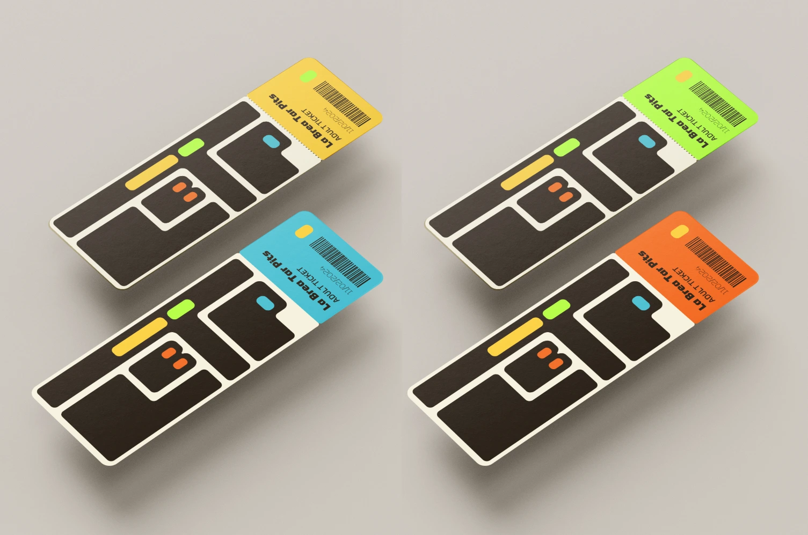
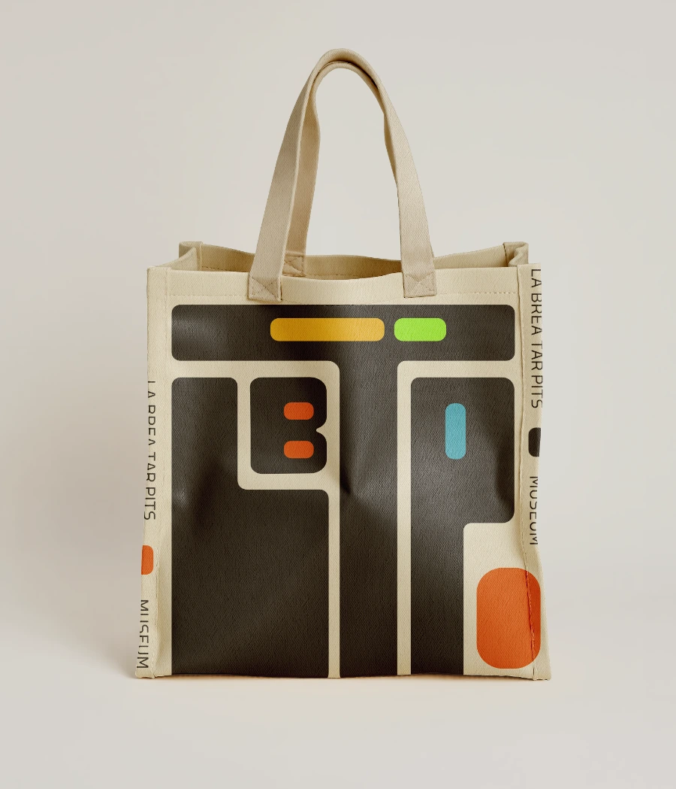
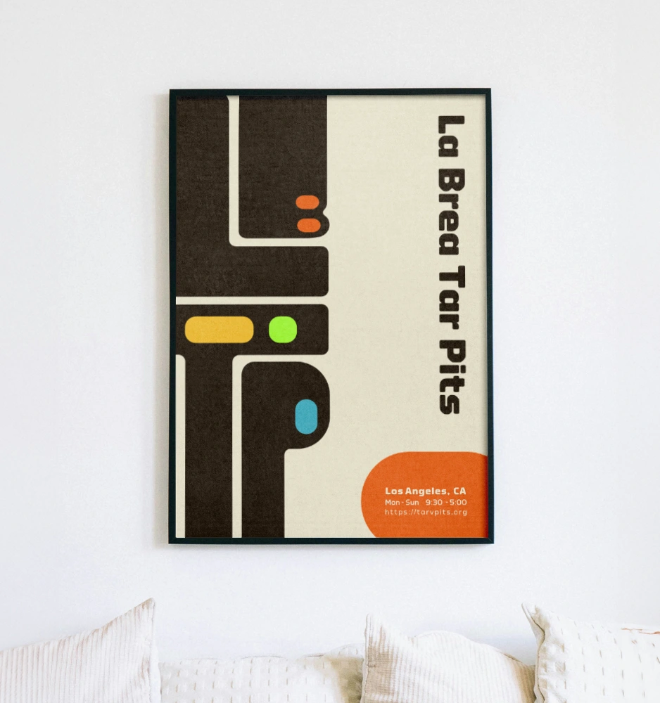
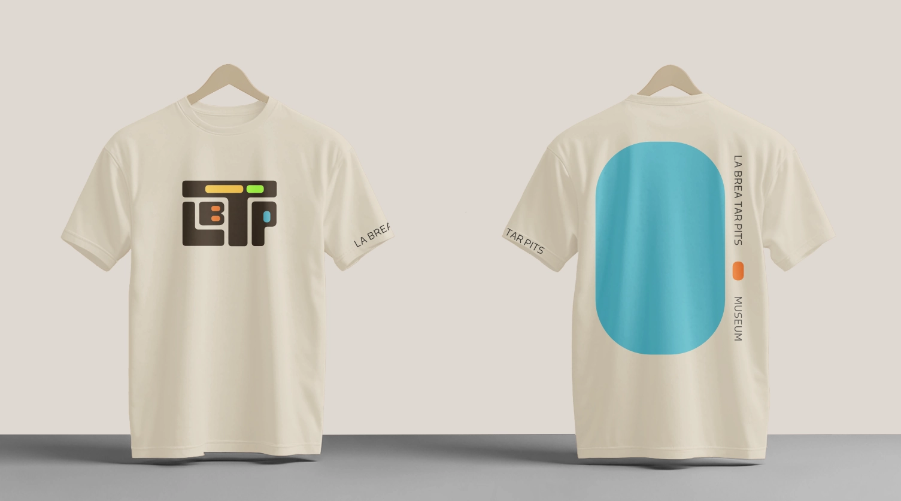
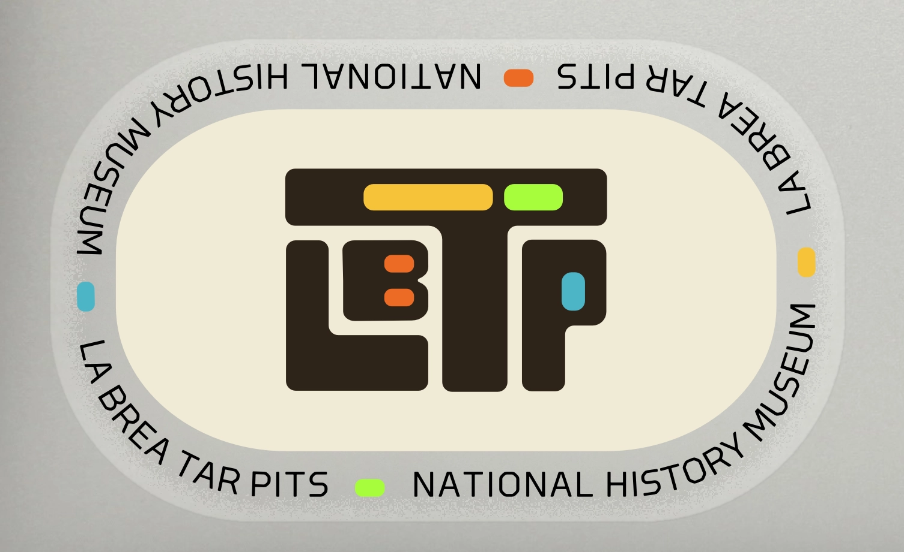
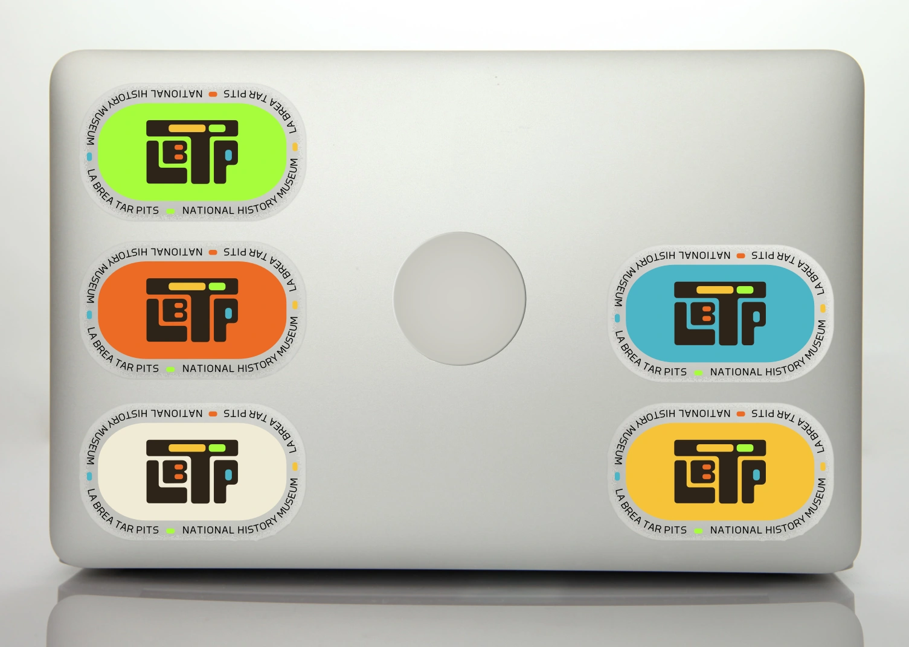

La Brea Tar Pits
Visual Identity Redesign
Project Brief
La Brea Tar Pits is an active excavation site and museum showcasing finds from its tar pits dating from the ice age. The museum works to engage people of all ages in the natural sciences and the ongoing tar pit discoveries. I redesigned their visual identity to reflect and contribute to the playful, interactive learning about the discoveries made there. The typographic identity I have developed considers shape, color, and references to the tar pits.
A Dynamic Logo
The shapes of the letterforms are able to be stretched, while maintaining their visual identity.
This allows for the use of the symbol across applications. The ability to morph these
letterforms also references the changing grid system used in the field during excavation as well
as the ongoing research to put together the puzzle that is the ice age ecosystem,
climate, and evolutionary history of the region.
The rounded rectangular forms within the letterforms reference the pits themselves while allowing
color to come into play without overwhelming the typographic system. This careful use of color
connects back to that concept of playful learning.






